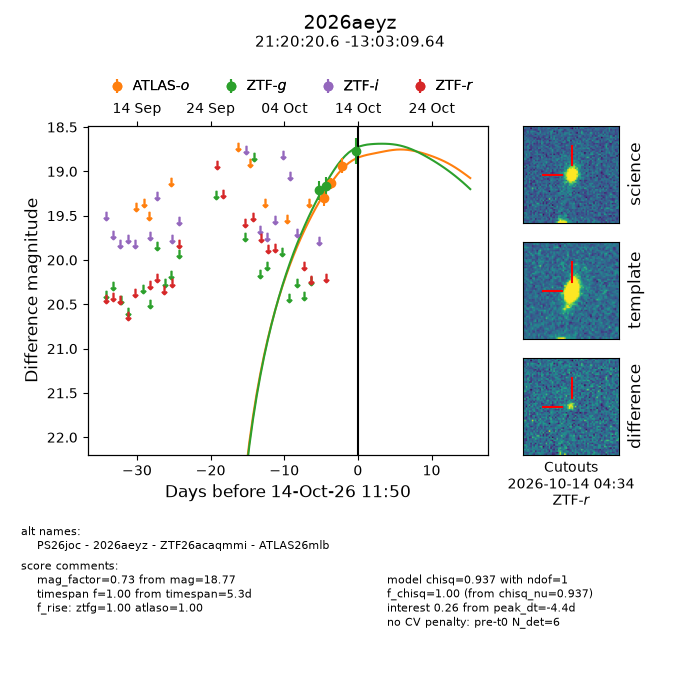
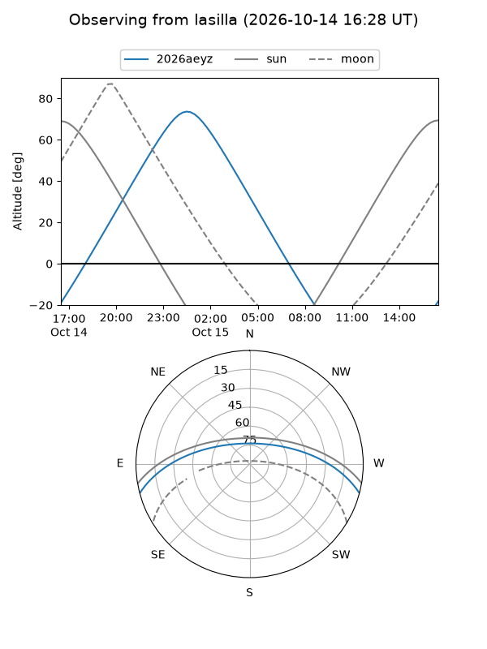
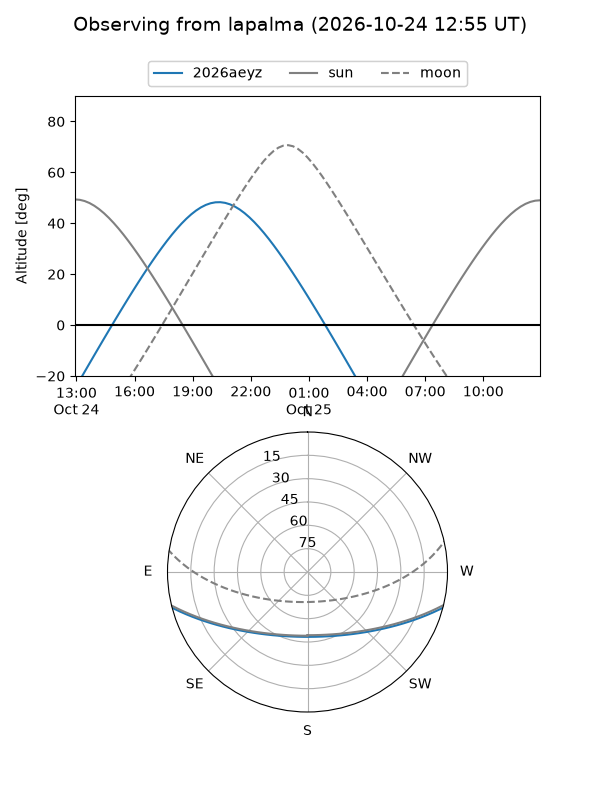
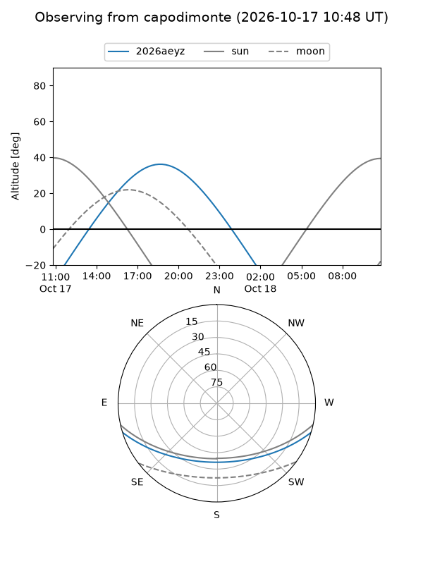
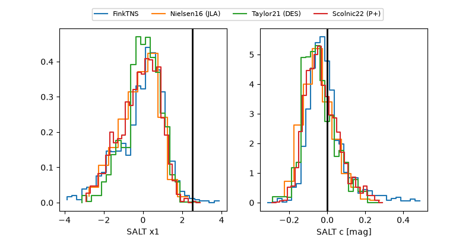

2026aeyz
Target 2026aeyz at 2026-10-14 11:51
Aliases and brokers:
FINK-ZTF: ztf.fink-portal.org/ZTF26acaqmmi
Lasair-ZTF: lasair-ztf.lsst.ac.uk/objects/ZTF26acaqmmi
ALeRCE-ZTF: alerce.online/object/ZTF26acaqmmi
YSE-PZ: ziggy.ucolick.org/yse/transient_detail/2026aeyz
TNS name: wis-tns.org/object/2026aeyz
Direct TNS query: direct search
alt names
ZTF26acaqmmi (ztf,fink_ztf)
2026aeyz (tns,yse)
ATLAS26mlb (atlas)
PS26joc (panstarrs)
Coordinates:
equatorial (ra, dec) = 320.0859,-13.05268
equatorial (HMS+DMS) = 21:20:20.61,-13:03:09.64
galactic (l, b) = (37.9219,-38.86475)
Flags:
peak dt: -4.4
Photometry:
last atlaso=18.94, ztfg=18.77
3 atlaso, 3 ztfg detections
Lightcurve

Visibility



Additional plots
